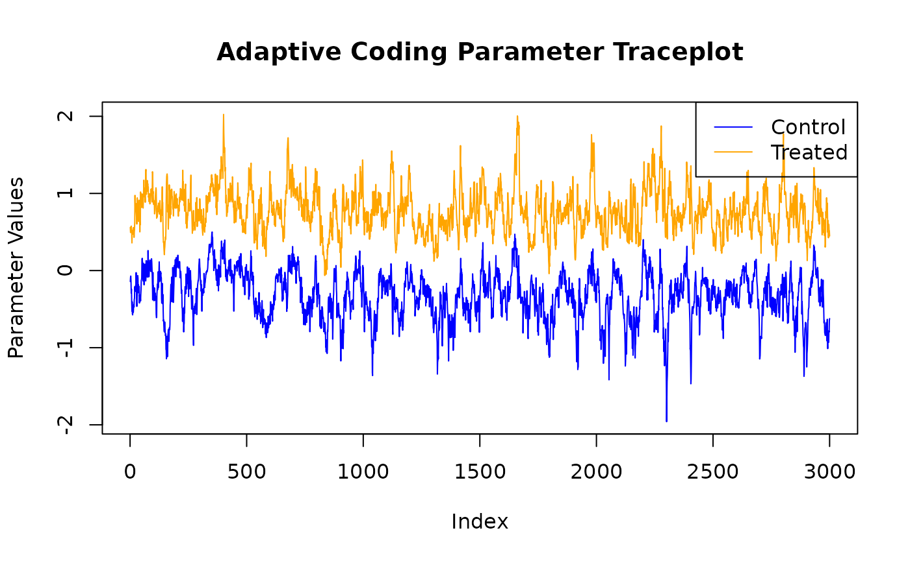

This vignette demonstrates the summary and plotting utilities
available for stochtree models in R.
To begin, we load the stochtree package.
and set a random seed for reproducibility.
random_seed = 1234
set.seed(random_seed)Supervised Learning
We begin with the supervised learning use case served by the
bart() function.
Below we simulate a simple regression dataset.
n <- 1000
p_x <- 10
p_w <- 1
X <- matrix(runif(n * p_x), ncol = p_x)
W <- matrix(runif(n * p_w), ncol = p_w)
f_XW <- (((0 <= X[, 10]) & (0.25 > X[, 10])) *
(-7.5 * W[, 1]) +
((0.25 <= X[, 10]) & (0.5 > X[, 10])) * (-2.5 * W[, 1]) +
((0.5 <= X[, 10]) & (0.75 > X[, 10])) * (2.5 * W[, 1]) +
((0.75 <= X[, 10]) & (1 > X[, 10])) * (7.5 * W[, 1]))
noise_sd <- 1
y <- f_XW + rnorm(n, 0, 1) * noise_sdNow we fit a simple BART model to the data
num_gfr <- 10
num_burnin <- 0
num_mcmc <- 1000
general_params <- list(num_chains = 3)
bart_model <- stochtree::bart(
X_train = X,
y_train = y,
leaf_basis_train = W,
num_gfr = num_gfr,
num_burnin = num_burnin,
num_mcmc = num_mcmc,
general_params = general_params
)We obtain a high level summary of the BART model by running
print()
print(bart_model)
#> stochtree::bart() run with mean forest, global error variance model, and mean forest leaf scale model
#> Continuous outcome was modeled as Gaussian with a leaf regression prior with 1 bases for the mean forest
#> Outcome was standardized
#> The sampler was run for 10 GFR iterations, with 3 chains of 0 burn-in iterations and 1000 MCMC iterations, retaining every iteration (i.e. no thinning)For a more detailed summary (including the information above), we use
the summary() function.
summary(bart_model)
#> stochtree::bart() run with mean forest, global error variance model, and mean forest leaf scale model
#> Continuous outcome was modeled as Gaussian with a leaf regression prior with 1 bases for the mean forest
#> Outcome was standardized
#> The sampler was run for 10 GFR iterations, with 3 chains of 0 burn-in iterations and 1000 MCMC iterations, retaining every iteration (i.e. no thinning)
#> Summary of sigma^2 posterior:
#> 3000 samples, mean = 0.891, standard deviation = 0.049, quantiles:
#> 2.5% 10% 25% 50% 75% 90% 97.5%
#> 0.7964524 0.8283403 0.8577688 0.8894556 0.9222797 0.9529145 0.9882464
#> Summary of leaf scale posterior:
#> 3000 samples, mean = 0.008, standard deviation = 0.002, quantiles:
#> 2.5% 10% 25% 50% 75% 90%
#> 0.005235008 0.005822955 0.006467668 0.007297721 0.008847812 0.010514480
#> 97.5%
#> 0.012306944
#> Summary of in-sample posterior mean predictions:
#> 1000 observations, mean = -0.064, standard deviation = 3.285, quantiles:
#> 2.5% 10% 25% 50% 75% 90% 97.5%
#> -6.8286920 -4.9057676 -1.8127463 -0.1201225 2.0178911 4.2491188 6.5036594We can use the plot() function to produce a traceplot of
model terms like the global error scale
or (if
is not sampled) the first observation of cached train set
predictions
plot(bart_model)For finer-grained control over which parameters to plot, we can also
use the extract_parameter() function to pull the posterior
distribution of any valid model term (e.g., global error scale
,
leaf scale
,
in-sample mean function predictions y_hat_train) and then
plot any subset or transformation of these values.
y_hat_train_samples <- extract_parameter(bart_model, "y_hat_train")
obs_index <- 1
plot(
y_hat_train_samples[obs_index, ],
type = "l",
main = paste0("In-Sample Predictions Traceplot, Observation ", obs_index),
xlab = "Index",
ylab = "Parameter Values"
)Causal Inference
We now run the same demo for the causal inference use case served by
the bcf() function.
Below we simulate a simple dataset for a causal inference problem with binary treatment and continuous outcome.
# Generate covariates and treatment
n <- 1000
p_X = 5
X = matrix(runif(n * p_X), ncol = p_X)
pi_X = 0.25 + 0.5 * X[, 1]
Z = rbinom(n, 1, pi_X)
# Define the outcome mean functions (prognostic and treatment effects)
mu_X = pi_X * 5 + 2 * X[, 3]
tau_X = X[, 2] * 2 - 1
# Generate outcome
epsilon = rnorm(n, 0, 1)
y = mu_X + tau_X * Z + epsilonNow we fit a simple BCF model to the data
num_gfr <- 10
num_burnin <- 0
num_mcmc <- 1000
general_params <- list(num_chains = 3)
bcf_model <- stochtree::bcf(
X_train = X,
y_train = y,
Z_train = Z,
num_gfr = num_gfr,
num_burnin = num_burnin,
num_mcmc = num_mcmc,
general_params = general_params
)We obtain a high level summary of the BCF model by running
print()
print(bcf_model)
#> stochtree::bcf() run with prognostic forest, treatment effect forest, global error variance model, and prognostic forest leaf scale model
#> Outcome was modeled as gaussian
#> Treatment was binary and its effect was estimated with adaptive coding
#> outcome was standardized
#> An internal propensity model was fit using stochtree::bart() in lieu of user-provided propensity scores
#> The sampler was run for 10 GFR iterations, with 3 chains of 0 burn-in iterations and 1000 MCMC iterations, retaining every iteration (i.e. no thinning)For a more detailed summary (including the information above), we use
the summary() function.
summary(bcf_model)
#> stochtree::bcf() run with prognostic forest, treatment effect forest, global error variance model, and prognostic forest leaf scale model
#> Outcome was modeled as gaussian
#> Treatment was binary and its effect was estimated with adaptive coding
#> outcome was standardized
#> An internal propensity model was fit using stochtree::bart() in lieu of user-provided propensity scores
#> The sampler was run for 10 GFR iterations, with 3 chains of 0 burn-in iterations and 1000 MCMC iterations, retaining every iteration (i.e. no thinning)
#> Summary of sigma^2 posterior:
#> 3000 samples, mean = 0.951, standard deviation = 0.046, quantiles:
#> 2.5% 10% 25% 50% 75% 90% 97.5%
#> 0.8659086 0.8923817 0.9184008 0.9503540 0.9818976 1.0088141 1.0459279
#> Summary of prognostic forest leaf scale posterior:
#> 3000 samples, mean = 0.002, standard deviation = 0.000, quantiles:
#> 2.5% 10% 25% 50% 75% 90%
#> 0.001000080 0.001168925 0.001358587 0.001634403 0.001907856 0.002150158
#> 97.5%
#> 0.002433439
#> Summary of adaptive coding parameters:
#> 3000 samples, mean (control) = -0.329, mean (treated) = 0.773, standard deviation (control) = 0.311, standard deviation (treated) = 0.285
#> quantiles (control):
#> 2.5% 10% 25% 50% 75% 90%
#> -1.01579152 -0.74252140 -0.51875150 -0.30685625 -0.10109796 0.04172554
#> 97.5%
#> 0.19660727
#> quantiles (treated):
#> 2.5% 10% 25% 50% 75% 90% 97.5%
#> 0.2746097 0.4198416 0.5839795 0.7587864 0.9338181 1.1241439 1.3893235
#> Summary of in-sample posterior mean predictions:
#> 1000 observations, mean = 3.488, standard deviation = 0.946, quantiles:
#> 2.5% 10% 25% 50% 75% 90% 97.5%
#> 1.718031 2.276761 2.821993 3.486532 4.131099 4.731275 5.413109
#> Summary of in-sample posterior mean CATEs:
#> 1000 observations, mean = 0.076, standard deviation = 0.511, quantiles:
#> 2.5% 10% 25% 50% 75% 90%
#> -0.68026994 -0.53671335 -0.38600573 0.01606533 0.60438208 0.75433455
#> 97.5%
#> 0.84751419We can use the plot() function to produce a traceplot of
model terms like the global error scale
or (if
is not sampled) the first observation of cached train set
predictions
plot(bcf_model)For finer-grained control over which parameters to plot, we can also
use the extract_parameter() function to pull the posterior
distribution of any valid model term (e.g., global error scale
,
prognostic forest leaf scale
,
CATE forest leaf scale
,
adaptive coding parameters
and
for binary treatment, in-sample mean function predictions
y_hat_train, in-sample CATE function predictions
tau_hat_train) and then plot any subset or transformation
of these values.
adaptive_coding_samples <- extract_parameter(bcf_model, "adaptive_coding")
plot(
adaptive_coding_samples[1, ],
type = "l",
main = "Adaptive Coding Parameter Traceplot",
xlab = "Index",
ylab = "Parameter Values",
ylim = range(adaptive_coding_samples),
col = "blue"
)
lines(adaptive_coding_samples[2, ], col = "orange")
legend(
"topright",
legend = c("Control", "Treated"),
lty = 1,
col = c("blue", "orange")
)